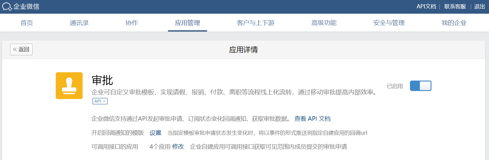

目录
企业微信向开发者提供审批流程引擎，此特性可将审批流程相关功能嵌入到自建应用中。
开发者可在自建应用中直接调用接口发起审批申请，系统根据审批流程自动通知相关人员进行审批操作。
提交申请后审批流程的每次状态变化，都会通知开发者，可按需进行拓展开发。
此套接口在自建应用中闭环，与“企业微信审批应用”相关接口无关。
开发者可在“管理后台-自建应用-审批接口”中，创建审批模板。
功能说明：
| 参数 | 说明 |
|---|---|
| 模板ID | 用于审批申请类型区分。在后续发起审批申请时，将申请和审批流程进行关联。 |
| 审批流程 | 审批流程相关配置。后续以此模板ID发起的审批申请，都将按照设置的流程进行通知和流转。 |
通过JS-SDK，可在自建应用中发起审批。查看JS-SDK调用详细说明
具体步骤：
1.通过config接口注入权限验证配置。查看
2.通过agentConfig注入应用的权限。查看
3.调用审批流程引擎JS-API（如下文请求示例）。
注：企业微信客户端2.5.0及以上版本支持。
请求示例：
wx.invoke('thirdPartyOpenPage', { "oaType": "10001",// String "templateId": "46af67a118a6ebf000002",// String "thirdNo": "thirdNo",// String "extData": { 'fieldList': [{ 'title': '采购类型', 'type': 'text', 'value': '市场活动', }, { 'title': '订单链接', 'type': 'link', 'value': 'https://work.weixin.qq.com', }], } }, function(res) { // 输出接口的回调信息 console.log(res); });点击复制
参数说明：
| 参数 | 必须 | 说明 |
|---|---|---|
| oaType | 是 | 操作类型，目前支持：10001-发起审批；10002-查看审批详情。 |
| templateId | 是 | 发起审批的模板ID，在自建应用-审批接口中创建模板可获取。 |
| thirdNo | 是 | 审批单号，由开发者自行定义，不可重复。 |
| extData | 是 | 详情数据，Json格式，用于审批详情页信息展示。 |
extData数据说明：
extData在发起时由开发者传入，其中数据将全部展示在审批申请中：
1.开发者可利用此特性，在发起审批时，传入需要申请人、审批人、抄送人看到的信息；
2.若需用户填写数据，可在自行使用表单收集，并传入extData中，用于展示。
{ "extData": { 'fieldList': [ { 'title': '采购类型', 'type': 'text', 'value': '市场活动', }, { 'title': '采购说明', 'type': 'text', 'value': '购买个人办公电脑', }, { 'title': '采购金额', 'type': 'text', 'value': '4839.00元', }, { 'title': '申请时间', 'type': 'text', 'value': '2018/06/20', }, { 'title': '订单链接', 'type': 'link', // link类型，用于在审批详情页展示第三方订单跳转地址 'value': 'https://www.qq.com', }, ], }, }点击复制
参数说明：
| 参数 | 必须 | 说明 |
|---|---|---|
| title | 否 | 字段标题，将会在审批详情页中展示。 |
| type | 否 | 字段类型，目前支持：text-文本；link:链接。link仅展示在审批详情页。 |
| value | 否 | 字段值，将会在审批详情页中展示。 |
错误说明：
| 错误提示 | 说明 |
|---|---|
| 已存在相同的审批编号 | oaType为10001时，传入的thirdNo已经被其他审批单占用。 |
| 审批申请不存在 | oaType为10002时，在历史记录中，传入的thirdNo对应的审批单不存在。 |
| 审批模板ID不正确 | 调用接口时传入了错误的templateId |
| 应用ID不正确 | 使用了错误的 agentId |
企业可以在管理后台-自建应用-设置API接收中，设置并开启审批状态通知事件。
开启后，自建应用每一个审批申请的审批状态变化，都会通知给开发者。查看事件回调详细说明
| 应用类型 | 权限要求 | 接收事件开关 |
|---|---|---|
| 自建应用 | 配置到「审批- 可调用接口的应用」中 | 审批状态通知事件 |
| 代开发应用 | 具有「审批」权限 | 无 |
| 第三方应用 | 具有「审批」权限 | 无 |
其中，配置可调用接口的自建应用入口如下：

回调通知示例：
<xml> <ToUserName>wwd08c8e7c775abaaa</ToUserName> <FromUserName>sys</FromUserName> <CreateTime>1527838022</CreateTime> <MsgType>event</MsgType> <Event>open_approval_change</Event> <AgentID>1</AgentID> <ApprovalInfo> <ThirdNo>thirdNoxxx</ThirdNo> <OpenSpName>付款</OpenSpName> <OpenTemplateId>1234567111</OpenTemplateId> <OpenSpStatus>1</OpenSpStatus> <ApplyTime>1527837645</ApplyTime> <ApplyUserName>jackiejjwu</ApplyUserName> <ApplyUserId>WuJunJie</ApplyUserId> <ApplyUserParty>产品部</ApplyUserParty> <ApplyUserImage>http://www.qq.com/xxx.png</ApplyUserImage> <ApprovalNodes> <ApprovalNode> <NodeStatus>1</NodeStatus> <NodeAttr>1</NodeAttr> <NodeType>1</NodeType> <Items> <Item> <ItemName>chauvetxiao</ItemName> <ItemUserid>XiaoWen</ItemUserid> <ItemParty>产品部</ItemParty> <ItemImage>http://www.qq.com/xxx.png</ItemImage> <ItemStatus>1</ItemStatus> <ItemSpeech></ItemSpeech> <ItemOpTime>0</ItemOpTime> </Item> </Items> </ApprovalNode> </ApprovalNodes> <NotifyNodes> <NotifyNode> <ItemName>jinhuiguo</ItemName> <ItemUserid>GuoJinHui</ItemUserid> <ItemParty>行政部</ItemParty> <ItemImage>http://www.qq.com/xxx.png</ItemImage> </NotifyNode> </NotifyNodes> <ApproverStep >0</ApproverStep > </ApprovalInfo> </xml>点击复制
参数说明：
| 参数 | 说明 |
|---|---|
| ToUserName | 接收方企业Corpid |
| FromUserName | 发送方：企业微信 |
| CreateTime | 消息发送时间 |
| MsgType | 消息类型 |
| Event | 事件名称：审批状态变化 |
| AgentID | 企业应用的id，整型。可在应用的设置页面查看 |
| ApprovalInfo | 审批信息 |
| ThirdNo | 审批单编号，由开发者在发起申请时自定义 |
| OpenSpName | 审批模板名称 |
| OpenTemplateId | 审批模板id |
| OpenSpStatus | 申请单当前审批状态：1-审批中；2-已通过；3-已驳回；4-已撤销 |
| ApplyTime | 提交申请时间 |
| ApplyUserName | 提交者姓名 |
| ApplyUserId | 提交者userid |
| ApplyUserParty | 提交者所在部门 |
| ApplyUserImage | 提交者头像 |
| ApprovalNodes | 审批流程信息 |
| ApprovalNode | 审批流程信息，可以有多个审批节点 |
| NodeStatus | 节点审批操作状态：1-审批中；2-已同意；3-已驳回；4-已转审 |
| NodeAttr | 审批节点属性：1-或签；2-会签 |
| NodeType | 审批节点类型：1-固定成员；2-标签；3-上级 |
| Items | 审批节点信息，当节点为标签或上级时，一个节点可能有多个分支 |
| Item | 审批节点分支，当节点为标签或上级时，一个节点可能有多个分支 |
| ItemName | 分支审批人姓名 |
| ItemUserid | 分支审批人userid |
| ItemParty | 分支审批人所在部门 |
| ItemImage | 分支审批人头像 |
| ItemStatus | 分支审批审批操作状态：1-审批中；2-已同意；3-已驳回；4-已转审 |
| ItemSpeech | 分支审批人审批意见 |
| ItemOpTime | 分支审批人操作时间 |
| NotifyNodes | 抄送信息，可能有多个抄送人 |
| NotifyNode | 抄送人信息 |
| ItemName | 抄送人姓名 |
| ItemUserid | 抄送人userid |
| ItemParty | 抄送人所在部门 |
| ItemImage | 抄送人头像 |
| ApproverStep | 当前审批节点：0-第一个审批节点；1-第二个审批节点…以此类推 |
开发者也可主动查询审批单的当前审批状态。
请求方式： POST（HTTPS）
请求地址： https://qyapi.weixin.qq.com/cgi-bin/corp/getopenapprovaldata?access_token=ACCESS_TOKEN
请求示例：
{ "thirdNo": "thirdNoxxx" }点击复制
参数说明：
| 参数 | 必须 | 说明 |
|---|---|---|
| access_token | 是 | 调用接口凭证 |
| thirdNo | 是 | 开发者发起申请时定义的审批单号 |
返回结果：
{ "errcode": 0, "errmsg": "ok", "data": { "ThirdNo": "thirdNoxxx", "OpenTemplateId": "1234567111", "OpenSpName": "付款", "OpenSpstatus": 1, "ApplyTime": 1527837645, "ApplyUsername": "jackiejjwu", "ApplyUserParty": "产品部", "ApplyUserImage": "http://www.qq.com/xxx.png", "ApplyUserId": "WuJunJie", "ApprovalNodes": { "ApprovalNode": [ { "NodeStatus": 1, "NodeAttr": 1, "NodeType": 1, "Items": { "Item": [ { "ItemName": "chauvetxiao", "ItemParty": "产品部", "ItemImage": "http://www.qq.com/xxx.png", "ItemUserId": "XiaoWen", "ItemStatus": 1, "ItemSpeech": "", "ItemOpTime": 0 } ] } } ] }, "NotifyNodes": { "NotifyNode": [ { "ItemName": "jinhuiguo", "ItemParty": "行政部", "ItemImage": "http://www.qq.com/xxx.png", "ItemUserId": "GuoJinHui" } ] }, "ApproverStep": 0 } }点击复制
参数说明：
| 参数 | 说明 |
|---|---|
| ToUserName | 接收方企业Corpid |
| FromUserName | 发送方：企业微信 |
| CreateTime | 消息发送时间 |
| MsgType | 消息类型 |
| Event | 事件名称：审批状态变化 |
| ApprovalInfo | 审批信息 |
| ThirdNo | 审批单编号，由开发者在发起申请时自定义 |
| OpenSpName | 审批模板名称 |
| OpenTemplateId | 审批模板id |
| OpenSpStatus | 申请单当前审批状态：1-审批中；2-已通过；3-已驳回；4-已撤销 |
| ApplyTime | 提交申请时间 |
| ApplyUserName | 提交者姓名 |
| ApplyUserId | 提交者userid |
| ApplyUserParty | 提交者所在部门 |
| ApplyUserImage | 提交者头像 |
| ApprovalNodes | 审批流程信息 |
| ApprovalNode | 审批流程信息，可以有多个审批节点 |
| NodeStatus | 节点审批操作状态：1-审批中；2-已同意；3-已驳回；4-已转审 |
| NodeAttr | 审批节点属性：1-或签；2-会签 |
| NodeType | 审批节点类型：1-固定成员；2-标签；3-上级 |
| Items | 审批节点信息，当节点为标签或上级时，一个节点可能有多个分支 |
| Item | 审批节点分支，当节点为标签或上级时，一个节点可能有多个分支 |
| ItemName | 分支审批人姓名 |
| ItemUserid | 分支审批人userid |
| ItemParty | 分支审批人所在部门 |
| ItemImage | 分支审批人头像 |
| ItemStatus | 分支审批审批操作状态：1-审批中；2-已同意；3-已驳回；4-已转审 |
| ItemSpeech | 分支审批人审批意见 |
| ItemOpTime | 分支审批人操作时间 |
| NotifyNodes | 抄送信息，可能有多个抄送人 |
| NotifyNode | 抄送人信息 |
| ItemName | 抄送人姓名 |
| ItemUserid | 抄送人userid |
| ItemParty | 抄送人所在部门 |
| ItemImage | 抄送人头像 |
| ApproverStep | 当前审批节点：0-第一个审批节点；1-第二个审批节点…以此类推 |